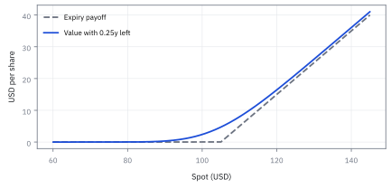
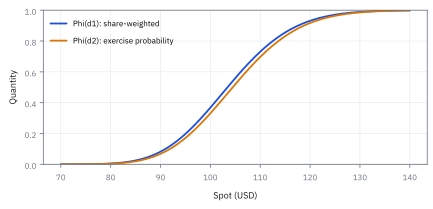
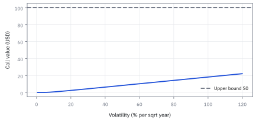

13.2 The Black–Scholes Formula
แกะราคาสิทธิ์ซื้อหุ้นทีละส่วนจนเห็นที่มาของทุกตัวเลข
บัตรสิทธิ์ซื้อหุ้นจ่ายเงินเมื่อราคาปลายทางสูงกว่าราคาที่ตกลง; ก่อนเห็นอนาคต ควรคิดมูลค่าจาก paths จริงหรือ paths ที่ปรับน้ำหนักแล้ว?
เฉลย: Black–Scholes แยก payoff เป็นส่วนหุ้นกับ strike แล้วคำนวณจาก expectation ของ paths ที่ปรับน้ำหนักแล้ว
Black–Scholes formula เปิดกล่อง payoff เป็นสองชิ้นและนับสิ่งที่ hedge ได้ ไม่ได้ทายราคาหุ้น
ศัพท์ชุดแรก: สัญญาและกติกาที่ใช้ตั้งราคา
- European call
-
คืออะไร: สิทธิ์ที่ให้ผู้ถือ *ซื้อ* หุ้นที่ราคาตกลงไว้ ใช้ได้เฉพาะวันหมดอายุวันเดียว
ใช้ทำอะไร: เป็นสัญญาที่สูตรในหัวข้อนี้ตั้งราคาให้เป็นตัวแรก ส่วนตัวอื่นได้มาจากตัวนี้เกือบทั้งหมด
ทำไมต้องเริ่มจากตัวนี้: เพราะเงินที่ได้รับตอนหมดอายุเขียนเป็นสูตรได้ในบรรทัดเดียว แต่ยังมีความไม่แน่นอนจริงให้ต้องคิด
- European put
-
คืออะไร: สิทธิ์ที่ให้ผู้ถือ *ขาย* หุ้นที่ราคาตกลงไว้ ใช้ได้เฉพาะวันหมดอายุเช่นกัน
ใช้ทำอะไร: ใช้ป้องกันขาลง คนถือหุ้นซื้อตัวนี้ไว้เพื่อกำหนดราคาขายขั้นต่ำ
ทำไมต้องรู้คู่กัน: เพราะราคาของมันไม่ต้องพิสูจน์ใหม่ พอได้ราคา call แล้ว ความสัมพันธ์ในขั้นที่ 12 ให้ราคา put ทันที
- risk-neutral measure
-
คืออะไร: กติกาถ่วงน้ำหนักโอกาสของเส้นทางราคาแบบใหม่ ที่เลือกมาให้ราคาหุ้นหลังหักดอกเบี้ยแล้วไม่มีทิศทางเฉลี่ยเหลืออยู่
ใช้ทำอะไร: ใช้เป็นกติกาเดียวที่เราคำนวณค่าเฉลี่ยของเงินรับปลายทางภายใต้มัน
ทำไมต้องใช้: เพราะถ้าใช้ความน่าจะเป็นจริงของโลก เราต้องรู้ว่าหุ้นจะโตเฉลี่ยเท่าไร ซึ่งไม่มีใครรู้ กติกานี้ตัดคำถามนั้นออกไปทั้งข้อ และยังให้ราคาที่ถูกต้อง เพราะราคาที่ได้มาจากต้นทุนของพอร์ตทำซ้ำในหัวข้อ 13.1 ไม่ได้มาจากการเดา
- risk-neutral expectation
-
คืออะไร: ค่าเฉลี่ยที่คำนวณโดยใช้กติกาถ่วงน้ำหนักข้างต้น ไม่ใช่กติกาของโลกจริง
ใช้ทำอะไร: เป็นตัวเลขที่เราคำนวณจริงในขั้นที่ 3 ถึง 5 แล้วคิดลดกลับมาเป็นราคาวันนี้
ทำไมต้องแยกชื่อ: เพราะมันไม่ใช่การพยากรณ์ ตัวเลขนี้ไม่ได้บอกว่าเราคิดว่าหุ้นจะไปทางไหน การเผลออ่านว่าเป็นคำพยากรณ์คือความเข้าใจผิดที่พบบ่อยที่สุดของทั้งบท
- martingale
- martingale คือ process ที่ conditional expected value ของอนาคตเท่ากับค่าปัจจุบัน ในที่นี้ใช้กับราคาที่ discount แล้ว ไม่ได้หมายความว่าราคาหุ้นดิบไม่มี drift
- lognormal distribution
-
คืออะไร: การกระจายของตัวเลขที่ติดลบไม่ได้ ซึ่ง log ของมันเป็นระฆังคว่ำ เรียนไปแล้วในหัวข้อ 1.10
ใช้ทำอะไร: เป็นรูปร่างของราคาหุ้นในวันหมดอายุตามที่แบบจำลองสมมติไว้
ทำไมต้องใช้: เพราะราคาหุ้นติดลบไม่ได้ ระฆังคว่ำธรรมดาจึงใช้กับราคาโดยตรงไม่ได้ แต่ใช้กับ log ของราคาได้
- standard normal
-
คืออะไร: ระฆังคว่ำที่จัดให้กลางอยู่ที่ศูนย์และความกว้างเท่ากับหนึ่ง
ใช้ทำอะไร: เป็นแหล่งความสุ่มตัวเดียวของทั้งสูตร เขียนแทนด้วย $Z$
ทำไมต้องใช้: เพราะเมื่อบีบความสุ่มทั้งหมดให้เหลือตัวเดียวที่มีตารางค่าสำเร็จ การหาค่าเฉลี่ยที่ดูเหมือนยากจึงกลายเป็นการเปิดตาราง
- normal cumulative distribution function (CDF)
-
คืออะไร: function ที่ตอบว่าค่าสุ่มมาตรฐานจะออกมาต่ำกว่าเลขที่ถามกี่เปอร์เซ็นต์ เขียนแทนด้วย $\Phi$
ใช้ทำอะไร: เป็นตัวเลขสองตัวที่โผล่ในคำตอบสุดท้าย คือ $\Phi(d_1)$ กับ $\Phi(d_2)$
ทำไมต้องใช้: เพราะพื้นที่ใต้ระฆังคว่ำไม่มีสูตรปิด เราจึงตั้งชื่อให้มันแล้วเปิดค่าจากตารางหรือเครื่องคิดเลข
- normal density
-
คืออะไร: ความสูงของเส้นระฆังคว่ำที่จุดหนึ่ง เขียนแทนด้วย $\phi$
ใช้ทำอะไร: ใช้ระหว่างการพิสูจน์ในขั้นที่ 5 ตอนเลื่อนโค้งไปหนึ่งช่วง
ทำไมต้องแยกจากตัวบน: เพราะตัวหนึ่งคือความสูง อีกตัวคือพื้นที่สะสม สลับกันเมื่อไรก็ได้คำตอบที่ผิดโดยไม่มีอะไรเตือน
สัญลักษณ์ที่ใช้ในหัวข้อนี้
| สัญลักษณ์ | ความหมาย | หน่วย |
|---|---|---|
| $S_0$ | ราคาหุ้นวันนี้ ซึ่งอ่านได้จากหน้าจอโดยตรง | USD |
| $S_T$ | ราคาหุ้นในวันหมดอายุ ซึ่งยังไม่มีใครรู้ จึงเป็นตัวสุ่มตัวเดียวของสูตร | USD |
| $K$ | ราคาที่ตกลงไว้ในสัญญา เป็นเส้นแบ่งว่าสิทธิ์มีค่าหรือไม่มีค่า | USD |
| $T$ | เวลาที่เหลือถึงวันหมดอายุ นับเป็นปี | ปี |
| $r$ | อัตราดอกเบี้ยไร้ความเสี่ยงแบบทบต่อเนื่อง ใช้ย้ายเงินข้ามเวลา | ปี⁻¹ |
| $\sigma$ | ความผันผวนต่อปี เป็น input ตัวเดียวที่ไม่มีขายในตลาด ต้องประมาณเอง | ปี⁻¹ᐟ² |
| $Z$ | แรงสุ่มมาตรฐานตัวเดียวที่ขับราคาปลายทาง มีค่ากลางศูนย์และความกว้างหนึ่ง | ไม่มีหน่วย |
| $\mathbb Q$ | กติกาถ่วงน้ำหนักโอกาสที่ใช้ตั้งราคา ไม่ใช่ความน่าจะเป็นจริงของโลก | ไม่มีหน่วย |
| $\mathbb E^{\mathbb Q}$ | ค่าเฉลี่ยที่คำนวณภายใต้กติกานั้น อ่านว่าราคา ไม่ใช่คำพยากรณ์ | ไม่มีหน่วย |
| $\Phi(x)$ | พื้นที่สะสมทางซ้ายของ $x$ ใต้ระฆังคว่ำมาตรฐาน คือโอกาสที่ค่าสุ่มจะต่ำกว่า $x$ | ไม่มีหน่วย |
| $\phi(x)$ | ความสูงของระฆังคว่ำมาตรฐานที่จุด $x$ ใช้ระหว่างพิสูจน์ ไม่ได้อยู่ในคำตอบ | ไม่มีหน่วย |
| $d_1,d_2$ | standardized distances ที่ใช้กับขาหุ้นและขา strike | ไม่มีหน่วย |
| $C$ | ราคา call ที่หัวข้อนี้พิสูจน์ออกมา | USD |
| $P$ | ราคา put ซึ่งได้ฟรีจากความสัมพันธ์ในขั้นที่ 12 ไม่ต้องพิสูจน์ใหม่ | USD |
| $D=e^{-rT}$ | ตัวคูณที่แปลงเงินวันหมดอายุกลับมาเป็นเงินวันนี้ | ไม่มีหน่วย |
| $\mathbf 1_A$ | ให้ค่าหนึ่งเมื่อเหตุการณ์ $A$ เกิด และศูนย์เมื่อไม่เกิด ใช้แยกเงินรับเป็นสองบัญชี | ไม่มีหน่วย |
| $(x)^+$ | ตัดค่าติดลบทิ้งให้เหลือศูนย์ คือรูปคณิตศาสตร์ของคำว่าสิทธิ์ | ตาม $x$ |
| $c$ | อัตราเงินปันผลจ่ายต่อเนื่อง (continuous dividend yield) |
ที่มาที่ไป: จากสมการ สู่สูตรที่กดเครื่องคิดเลขได้
หัวข้อก่อนหน้าให้สมการที่ราคา option ต้องเชื่อฟัง แต่สมการอย่างเดียวยังใช้ตั้งราคาไม่ได้ ต้องแก้มันออกมาเป็นสูตรก่อน
หัวข้อนี้เลือกเส้นทางที่ตรงกว่าการแก้สมการ คือคำนวณค่าเฉลี่ยของเงินที่จะได้รับโดยตรง ภายใต้กติกาถ่วงน้ำหนักที่ได้จากบทที่ 12
สิ่งที่ทำให้คำนวณได้จริงคือการแยก payoff ออกเป็นสองก้อน คือได้หุ้นมาก้อนหนึ่ง จ่ายเงินสดออกไปก้อนหนึ่ง แล้วคิดแยกกัน ซึ่งเป็นที่มาของสองพจน์ในสูตรสุดท้าย
ข้อสังเกตสำคัญคือทุกวันนี้ตลาดไม่ได้ใช้สูตรนี้ทำนายราคา แต่ใช้มันแปลงราคาที่ซื้อขายกันจริง ให้เป็นตัวเลขความผันผวนที่เทียบข้ามสัญญาได้ ซึ่งเป็นการใช้งานคนละแบบกับที่ผู้เขียนตั้งใจ
ที่มาและประวัติศาสตร์: การเดินทางสู่สูตรที่ไม่ต้องเดาความกลัว
ก่อนปี 1973 การตั้งราคา option เป็นปริศนาที่ไม่มีใครแก้ตก ราว ๆ ปี 1900 Louis Bachelier เสนอให้ใช้ Brownian motion อธิบายราคาหุ้นบนกระดานปารีส แต่แบบจำลองของเขาทำให้ราคาหุ้นติดลบได้ ต่อมา Paul Samuelson (1965) แก้ด้วย geometric Brownian motion สำหรับตั้งราคา warrant ทว่าสูตรของ Samuelson ยังติดตัวแปร $\mu$ หรือผลตอบแทนเฉลี่ยที่คาดหวังของหุ้น ซึ่งไม่มีใครรู้ว่าควรเป็นเท่าไร เพราะขึ้นกับความพึงพอใจและความกลัวความเสี่ยงของแต่ละคนเหมือนปัญหา St. Petersburg paradox
Fischer Black, Myron Scholes และ Robert C. Merton (ราว ๆ 1973) ค้นพบจุดเปลี่ยนสำคัญ: หากผู้ลงทุนปรับสัดส่วนการถือหุ้นและกู้ยืมเงินสดอย่างต่อเนื่อง (delta hedging) ความเสี่ยงของพอร์ตโฟลิโอจะหักล้างกันหมดจนไร้ความเสี่ยงในทุกขณะสั้น ๆ และตามหลัก no-arbitrage พอร์ตโฟลิโอที่ไร้ความเสี่ยงต้องเติบโตด้วยอัตราดอกเบี้ย $r$ เท่านั้น ส่งผลให้ตัวแปร $\mu$ และระดับความกลัวความเสี่ยงหลุดหายไปจากสมการอย่างสิ้นเชิง ในเวลาไล่เลี่ยกัน Edward Thorp ก็ใช้แนวคิด delta hedging ทำกำไรจาก warrant ในตลาดจริงเช่นกัน
การค้นพบนี้เปลี่ยนโลกการเงินจากการเดาทิศทางราคา มาสู่เทคโนโลยีการผลิตเชิงวิศวกรรม: option ไม่ใช่การพนันที่ต้องอาศัยผู้ซื้อผู้ขายที่มีมุมมองต่างกัน แต่เป็นสัญญาทางการเงินที่สามารถสร้างเลียนแบบได้ด้วยหุ้นและพันธบัตร เมื่อตลาด options จดทะเบียนอย่าง Chicago Board Options Exchange เปิดทำการในปี 1973 สูตร Black–Scholes จึงกลายเป็นโครงสร้างพื้นฐานหลักที่ขับเคลื่อนตลาด derivative ทั่วโลกตั้งแต่นั้นมา
Worked Example — โจทย์และสิ่งที่ให้มา
โจทย์ให้อะไรมาบ้าง: ใช้หุ้นสหรัฐฯ ไม่มีเงินปันผล ราคาเริ่มต้น 100 USD, strike 105 USD, อายุ 0.25 ปี, อัตราดอกเบี้ย 0.04 ต่อปีแบบต่อเนื่อง และ volatility 0.20 ต่อรากปี ราคาเป็นต่อหุ้น; หากสัญญาแทน 100 หุ้นต้องคูณ 100 หลังคำนวณ ไม่ใส่ตัวคูณไว้กลางสูตร
สมมติฐานเหมือนหัวข้อ 13.1: volatility และอัตราดอกเบี้ยคงที่ เส้นทางต่อเนื่อง ซื้อขาย frictionless และใช้สิทธิ์ได้เฉพาะวันหมดอายุ สูตรจึงเป็น benchmark ที่ตรวจสอบได้ ไม่ใช่ market quote โดยตัวมันเอง
ขั้นที่ 1 — ลองด้วยมือ: ราคาปลายทางสามค่า แยก payoff เป็นสองบัญชี
ก่อนใช้ระฆังคว่ำ ลองโลกที่ราคาปลายทางมีได้แค่สามค่า จะเห็นกลไก ‘แยก payoff เป็นบัญชีหุ้นกับบัญชี strike’ ที่ทั้งหัวข้อพึ่งพา
call จ่ายเฉพาะทางที่หุ้นจบเหนือ 105 คือทางเดียว (120) น้ำหนัก 0.3 ค่าเฉลี่ยจึงเป็น 4.5 แยกเป็นสองบัญชี: ‘ได้หุ้น’ เฉพาะทางนั้น (36) กับ ‘จ่าย strike’ เฉพาะทางนั้น (31.5) ลบกันได้เท่าเดิม
สูตร Black–Scholes คือการทำแบบเดียวกันเมื่อ $S_T$ มีได้ทุกค่า: บัญชีหุ้นจะกลายเป็น $S_0e^{rT}\Phi(d_1)$ และบัญชี strike เป็น $K\Phi(d_2)$ (ขั้นที่ 6) แล้วคิดลดทั้งคู่
ตัวเลข 0.3 ในตัวอย่างนี้เล่นบท $\Phi(d_2)$ คือโอกาสได้ใช้สิทธิ์ ส่วน 36/0.3 = 120 คือค่าเฉลี่ยของหุ้น *เมื่อ* ได้ใช้สิทธิ์ ซึ่งสูงกว่าค่าเฉลี่ยรวม 103 นี่คือเหตุผลที่บัญชีหุ้นต้องมีตัวเลขของตัวเองที่ไม่ใช่โอกาสเฉย ๆ
ขั้นที่ 2 — แก้สมการหุ้นภายใต้ risk-neutral measure
เริ่มจากเขียนราคาหุ้นตอนหมดอายุให้อยู่ในรูปที่มีตัวสุ่มมาตรฐานตัวเดียว สี่บรรทัดนี้ประกอบผลจากสามหัวข้อก่อนหน้าเข้าด้วยกัน ไม่มีอะไรใหม่ และการมีก้อนสุ่มตัวเดียวคือสิ่งที่ทำให้ integral ข้างหน้าคำนวณได้ด้วยมือ
ไม่ต้องแก้สมการใหม่ ยกคำตอบของสมการหุ้นจากหัวข้อ 11.1 มาใช้ได้เลย แล้วเขียน Brownian ที่เวลา $T$ ในรูปก้อนมาตรฐานคูณราก ตามสมบัติที่ 2 ของหัวข้อ 10.1
สิ่งเดียวที่เปลี่ยนคือบรรทัดสาม ภายใต้น้ำหนักชุดใหม่ของหัวข้อ 12.6 อัตราการโตจริงถูกแทนด้วยอัตราดอกเบี้ย ส่วนความกว้างของแรงสุ่มไม่เปลี่ยน ซึ่งเข้ากันพอดีกับผลของหัวข้อ 13.1 ที่ $\mu$ หายไปจากสมการ
ตอนนี้เหลือก้อนสุ่มตัวเดียวคือ $Z$ ซึ่งเราคำนวณค่าเฉลี่ยของมันเป็นแล้วตั้งแต่บทที่ 1 โจทย์ตั้งราคาทั้งหมดจึงยุบเหลือ integral บนระฆังมาตรฐาน
ขั้นที่ 3 — แยก payoff เป็นสองบัญชี
payoff ของ call แยกได้เป็นสองก้อน คือได้หุ้นมาก้อนหนึ่ง กับจ่ายเงินสดออกไปอีกก้อนหนึ่ง หกบรรทัดนี้อธิบายว่าทำไมสูตร Black–Scholes ถึงมีสองพจน์ และทำไมสองพจน์นั้น ถึงมีหน้าตาไม่เหมือนกัน คือก้อนหนึ่งถ่วงด้วยราคาหุ้น อีกก้อนไม่ถ่วง
payoff ของ call มีสองกรณี ใช้สิทธิ์เมื่อราคาสูงกว่า strike ไม่ใช้เมื่อต่ำกว่า วิธีจัดการคือรวบสองกรณีเป็นบรรทัดเดียวด้วยตัวบ่งชี้ ซึ่งเป็นหนึ่งเมื่อเงื่อนไขจริงและศูนย์เมื่อไม่จริง
กระจายวงเล็บแล้วได้สองบัญชีที่ต่างกันโดยสิ้นเชิง คือบัญชีหุ้น กับบัญชีเงินสด แยกแบบนี้แล้วแต่ละก้อนคำนวณง่ายกว่ามาก
ค่าเฉลี่ยของตัวบ่งชี้คือความน่าจะเป็นของเหตุการณ์นั้นพอดี เพราะมันคูณหนึ่งด้วยโอกาสที่เกิด บวกศูนย์ด้วยโอกาสที่ไม่เกิด
ใส่สูตรตั้งราคาของหัวข้อ 12.6 กับสองก้อนที่แยกไว้ สองก้อนนี้จะกลายเป็นสองพจน์ในสูตรสุดท้าย นั่นคือเหตุผลที่ Black-Scholes มีสองพจน์ ไม่ใช่พจน์เดียว
ขั้นที่ 4 — เปลี่ยนเงื่อนไขใช้สิทธิ์เป็นเกณฑ์ของ Z
เงื่อนไขว่าราคาสูงกว่า strike แปลงเป็นเงื่อนไขบนตัวสุ่มมาตรฐานได้ ห้าบรรทัดนี้คือที่มาของ $d_2$ ทุกตัวอักษร มันไม่ใช่สัญลักษณ์ลึกลับ มันคือระยะจากเกณฑ์ใช้สิทธิ์ วัดเป็นจำนวนเท่าของความกว้าง เหมือน z-score ในหัวข้อ 1.9
เงื่อนไขใช้สิทธิ์เขียนอยู่ในภาษาของราคา แต่ distribution ที่เรารู้อยู่ในภาษาของก้อนสุ่มมาตรฐาน จึงต้องขนอสมการข้ามไป ใส่ log ทั้งสองข้างได้โดยไม่พลิกเครื่องหมาย เพราะ log เพิ่มขึ้นเสมอและราคาเป็นบวกเสมอ
ย้ายทุกอย่างที่ไม่ใช่ก้อนสุ่มไปฝั่งขวา แล้วส่วนด้วย $\sigma\sqrt T$ ซึ่งเป็นบวก เครื่องหมายจึงไม่พลิก
ตั้งชื่อฝั่งขวาโดยกลับเครื่องหมายทั้งก้อน การกลับเครื่องหมายทำให้ $\log(K/S_0)$ กลายเป็น $\log(S_0/K)$ เพราะ log ของส่วนกลับคือค่าลบ
ตอนนี้เงื่อนไขใช้สิทธิ์เขียนใหม่ทั้งหมดในภาษาของก้อนสุ่มมาตรฐาน integral ที่ต้องคำนวณจึงมีขอบเป็นตัวเลขที่รู้ค่าแล้ว
ขั้นที่ 5 — เลื่อน normal density สำหรับขาหุ้น
ขาหุ้นมี exponential คูณอยู่หน้า density จึงต้องจัดกำลังสองใหม่ให้กลับมาเป็น density ปกติที่เลื่อนไป หกบรรทัดนี้ตอบคำถามที่คนเรียน Black–Scholes ถามบ่อยที่สุด คือ $d_1$ กับ $d_2$ ต่างกันตรงไหน คำตอบคือต่างกันด้วยระยะที่ density ถูกเลื่อน ไม่ใช่เพราะเป็นความน่าจะเป็นคนละอย่าง
ขาหุ้นมีราคาคูณอยู่ข้างใน integral ซึ่งเป็น exponential ทำให้ integral ไม่ใช่รูปมาตรฐาน กลเม็ดคือรวมเลขชี้กำลังสองก้อนเข้าด้วยกันแล้วจัดกำลังสองสมบูรณ์ วิธีเดียวกับหัวข้อ 1.10 ทุกประการ
ดึงลบครึ่งออกมาข้างหน้า แล้วเติมและลบ $\sigma^{2}T$ หนึ่งครั้ง เพื่อให้สองพจน์แรกกลายเป็นวงเล็บยกกำลังสอง ลองกระจายกลับเพื่อตรวจได้ทุกเมื่อ พอกระจายลบครึ่งเข้าไป ค่าที่ลบทิ้งก็กลับมาเป็นบวก
อ่านผลบรรทัดห้า การถ่วงด้วยราคาหุ้นไม่ได้ทำลายรูประฆัง มันแค่เลื่อนจุดกลางไป $\sigma\sqrt T$ แล้วทิ้งค่าคงที่ไว้ข้างหน้า
นี่คือเหตุผลเดียวที่ $d_1$ ต่างจาก $d_2$ ไม่มีอะไรลึกลับกว่านั้น มันคือระยะที่ density ถูกเลื่อน
ขั้นที่ 6 — ประเมิน integral สองส่วน
เมื่อทั้งสองก้อนกลายเป็น integral ของ density มาตรฐานแล้ว ก็อ่านค่าออกมาเป็น $\Phi$ ได้ทันที หกบรรทัดนี้คือจุดที่ทุกอย่างมาบรรจบ และเครื่องมือที่ใช้มีแค่สองอย่าง คือการจัดกำลังสองสมบูรณ์ กับการเปลี่ยนตัวแปรใน integral
ก้อนเงินสดง่ายที่สุด ใช้ความสมมาตรของระฆัง พื้นที่ทางขวาของค่าลบเท่ากับพื้นที่ทางซ้ายของค่าบวก จึงอ่านเป็น $\Phi(d_2)$ ได้ทันที
ก้อนหุ้นต้องใช้ผลของขั้นที่ 5 เขียนเป็น integral โดยแทนราคาจากขั้นที่ 2 และใช้ขอบจากขั้นที่ 4 แล้วแทน exponential คูณ density ด้วย density ที่เลื่อนแล้ว ค่าคงที่ทั้งหมดออกมาอยู่ข้างหน้า
เปลี่ยนตัวแปรให้ตามการเลื่อน ขอบล่างจึงเลื่อนตามไปด้วย และเลขชี้กำลังสองก้อนหน้ารวมกันได้ $rT$ พอดี เพราะลบครึ่งกับบวกครึ่งหักกัน
ข้อควรระวังที่คนพลาดบ่อยที่สุด $\Phi(d_1)$ ไม่ใช่ความน่าจะเป็นที่จะได้ใช้สิทธิ์ อันนั้นคือ $\Phi(d_2)$ ส่วนตัวแรกคือค่าเฉลี่ยของหุ้นที่ถ่วงด้วยราคาแล้ว
ขั้นที่ 7 — ได้สูตร call และ put
ประกอบสองก้อนกลับเข้าด้วยกันเป็นสูตร call แล้วใช้ความสัมพันธ์ระหว่างสองสัญญาได้สูตร put เจ็ดบรรทัดนี้ปิดงานทั้งหัวข้อ และจุดที่ควรจำคือฝั่ง put ไม่ได้ต้องทำงานใหม่เลย มันเป็นแค่พีชคณิตบนสูตรที่มีอยู่แล้ว
แทนสองผลของขั้นที่ 6 ลงในรูปที่แยกไว้ในขั้นที่ 3 แล้วคูณตัวคิดลดเข้าไป พจน์แรกหักกันหมดเหลือราคาหุ้นวันนี้เปล่า ๆ ได้สูตร call ครบ
ฝั่ง put ไม่ต้องคำนวณ integral ใหม่เลยสักตัว ใช้ความสัมพันธ์ระหว่าง call กับ put ซึ่งหัวข้อ 13.4 พิสูจน์ด้วย payoff ทีละกรณี ย้ายข้างแล้วแทนสูตร call ที่เพิ่งได้
จัดกลุ่มใหม่โดยดึง $Ke^{-rT}$ และ $S_0$ ออกเป็นตัวร่วม แล้วใช้ความสมมาตรของระฆังอีกครั้ง คือหนึ่งลบพื้นที่ทางซ้าย เท่ากับพื้นที่ทางซ้ายของค่าที่กลับเครื่องหมาย
สูตร put จึงตกลงมาเองจากสูตร call งานหนักทั้งหมดทำครั้งเดียวก็พอ
ทำไม $\Phi(d_1)$ กับ $\Phi(d_2)$ ไม่ควรถูกเรียกเหมือนกัน
Phi ของ d2 ตอบว่าเส้นทางภายใต้ risk-neutral measure จบเหนือ strike เป็นสัดส่วนเท่าไร ขณะที่ Phi ของ d1 ให้น้ำหนักเส้นทางที่หุ้นสูงมากมากขึ้นเพราะอยู่ใน expectation ของราคาปลายทาง จึงเท่ากับ delta ในกรณีไม่มีเงินปันผล แต่ไม่ใช่ exercise probability การแยกสองความหมายนี้ช่วยกันการตีความพื้นที่ใต้โค้งผิด
ศัพท์ชุดที่สอง: หน่วย เครื่องมือคิดลด และวิธีตรวจคำตอบ
- indicator
- indicator คือ function ที่ให้ค่าเป็นหนึ่งเมื่อเหตุการณ์จริงและศูนย์เมื่อไม่จริง ใช้แยกเงินรับของ call ออกเป็นหุ้นกับ strike บนเหตุการณ์ $S_T>K$
- discount factor
-
คืออะไร: ตัวคูณที่แปลงเงินในอนาคตให้เป็นเงินวันนี้
ใช้ทำอะไร: ใช้ในขั้นสุดท้ายเพื่อแปลงค่าเฉลี่ยของเงินรับปลายทางเป็นราคาที่จ่ายวันนี้
ทำไมต้องใช้: เพราะเงิน 1 USD วันนี้ กับ 1 USD ในอีกหนึ่งปี ไม่ใช่ของอย่างเดียวกัน การบวกกันตรง ๆ โดยไม่แปลงหน่วยเวลาก่อนคือความผิดพลาดเชิงหน่วย
- continuous compounding
-
คืออะไร: วิธีคิดดอกเบี้ยที่ทบทุกขณะ ทำให้ตัวคูณเป็น $e^{-rT}$
ใช้ทำอะไร: ใช้เป็นข้อตกลงเรื่องดอกเบี้ยตลอดทั้งบท
ทำไมต้องใช้แบบนี้: เพราะมันทำให้การคูณตัวคูณหลายช่วงเวลากลายเป็นการบวกเลขชี้กำลัง พีชคณิตทั้งหน้าจึงยุบลงได้ ถ้าใช้แบบทบรายปีสูตรจะไม่สวยแบบนี้
- put–call parity
-
คืออะไร: ความสัมพันธ์ที่ผูก call, put, หุ้น และเงินฝาก เข้าด้วยกัน เพราะสองฝั่งให้เงินเท่ากันทุกกรณีในวันหมดอายุ
ใช้ทำอะไร: ใช้ตรวจคำตอบในขั้นที่ 12 และใช้หาราคา put โดยไม่ต้องพิสูจน์ใหม่
ทำไมต้องใช้: เพราะมันไม่พึ่งแบบจำลองเลย ถ้าสูตรที่เราพิสูจน์มาขัดกับมัน แปลว่าสูตรผิด ไม่ใช่ตลาดผิด
- no-arbitrage bound
-
คืออะไร: ช่วงราคาที่ราคา option ต้องอยู่ภายใน ไม่เช่นนั้นจะมีวิธีทำกำไรแน่นอน
ใช้ทำอะไร: ใช้เป็นการตรวจแบบหยาบว่าราคาที่คำนวณได้ยังอยู่ในโลกที่เป็นไปได้
ทำไมต้องใช้: เพราะมันจับความผิดพลาดหน่วยได้เร็วที่สุด เช่นการใส่ 20 แทน 0.20 มักดันราคาทะลุขอบบนทันที
- variance
-
คืออะไร: ขนาดการกระจายแบบยกกำลังสอง ในที่นี้คิดต่อหนึ่งหน่วยเวลา
ใช้ทำอะไร: เป็นตัวที่บวกกันได้ตามเวลา ความกว้างตลอด $T$ ปีจึงเป็น $\sigma^{2}T$
ทำไมต้องใช้: เพราะเฉพาะตัวนี้เท่านั้นที่บวกกันได้ตรง ๆ ส่วนรากของมันบวกไม่ได้ กฎรากที่สองของเวลาทั้งหมดมาจากข้อเท็จจริงข้อนี้ข้อเดียว
- volatility
-
คืออะไร: รากที่สองของ variance ต่อปี รายงานเป็นเปอร์เซ็นต์ต่อปี
ใช้ทำอะไร: เป็น input ตัวเดียวในสูตรที่มองไม่เห็นในตลาดโดยตรง
ทำไมต้องแยกชื่อ: เพราะคนพูดสองคำนี้สลับกันบ่อย แต่ใส่ผิดตัวลงในสูตร ราคาที่ได้จะผิดเป็นเท่าตัว
- underlying
-
คืออะไร: สินทรัพย์ที่สัญญาอ้างอิงถึง ในที่นี้คือหุ้น
ใช้ทำอะไร: เป็นตัวที่ราคาของ option ทั้งหมดขึ้นอยู่กับมัน
ทำไมต้องมี: เพราะราคาที่พิสูจน์มาได้จากการซื้อขายตัวนี้จริง ถ้าซื้อขายมันไม่ได้ วิธีทั้งหมดในบทนี้ก็ใช้ไม่ได้
- forward
-
คืออะไร: ราคาที่ตกลงกันวันนี้ว่าจะซื้อขายกันในอนาคต เท่ากับ $S_0e^{rT}$ ในโลกของบทนี้
ใช้ทำอะไร: ใช้เป็นจุดอ้างอิงกลางว่าค่าไหนคือ 'ตรงกลาง' ของราคาปลายทาง
ทำไมต้องใช้: เพราะเทียบ strike กับราคาวันนี้นั้นเทียบผิดจุด ตัวที่ควรเทียบคือราคาที่ตลาดตกลงกันแล้วสำหรับวันนั้น
- moneyness
-
คืออะไร: ระยะห่างระหว่าง strike กับจุดอ้างอิง มักวัดเป็น log ของอัตราส่วน
ใช้ทำอะไร: ใช้บอกว่าสิทธิ์ใบนี้ใกล้ได้ใช้หรือไกลจากการได้ใช้
ทำไมต้องใช้: เพราะ strike 100 บนหุ้นราคา 100 กับบนหุ้นราคา 1000 เป็นสัญญาคนละแบบกันโดยสิ้นเชิง ตัวเลขดิบจึงเทียบข้ามหุ้นไม่ได้
- payoff
-
คืออะไร: เงินที่ผู้ถือได้รับในวันหมดอายุ ขึ้นกับราคาหุ้นวันนั้นอย่างเดียว
ใช้ทำอะไร: เป็นจุดตั้งต้นของการพิสูจน์ในขั้นที่ 3
ทำไมต้องแยกจากราคา: เพราะ payoff คือสิ่งที่ได้ตอนจบ ส่วนราคาคือสิ่งที่จ่ายตอนเริ่ม ทั้งหัวข้อนี้คือการแปลงอันแรกให้เป็นอันหลัง
- partial differential equation
- partial differential equation คือสมการที่มี derivatives ตามหลายตัวแปร หัวข้อก่อน derive มันเพื่อเชื่อมวิธีพอร์ตทำซ้ำกับสูตรปิดในหัวข้อนี้
ขั้นที่ 8 — เตรียมตัวเศษและส่วนด้วยหน่วยเดียวกัน
เริ่มตัวอย่างด้วยตัวเลขจริง แยกชิ้นส่วนของ $d_1$ ออกมาคำนวณทีละชิ้นก่อน จะได้ไม่พลาด
ทีละชิ้น: 100/105 = 0.952381 แล้ว log ของมันคือ −0.048790 (ติดลบเพราะ strike สูงกว่า spot) ส่วน 0.20 กำลังสองคือ 0.04 ครึ่งหนึ่งคือ 0.02 บวก 0.04 ได้ 0.06 คูณ 0.25 ได้ 0.015 และรากของ 0.25 คือ 0.5 คูณ 0.20 ได้ 0.10
log moneyness และ drift adjustment ไม่มีหน่วย ส่วน volatility คูณรากเวลามีหน่วยหักล้างกัน ตัวส่วน 0.10 จึงใช้ standardized numerator ได้
ขั้นที่ 9 — คำนวณ $d_1$ และ $d_2$
รวมสามชิ้นเข้าเป็น $d_1$ แล้ว $d_2$ ตามมาทันทีโดยลบออกไปพจน์เดียว
ทั้งสองค่าเป็นลบเพราะ call ยัง out of the money และเวลาสั้น d_2 ต่ำกว่า d_1 อยู่ 0.10 ตาม identity
ขั้นที่ 10 — อ่านค่าจาก normal CDF และ discount
แปลงสองค่านั้นเป็นความน่าจะเป็น และเตรียมตัวคิดลดไว้ให้พร้อม
exercise probability ภายใต้แบบจำลองประมาณ 33.07 เปอร์เซ็นต์ ส่วน share-weighted quantity ประมาณ 36.77 เปอร์เซ็นต์ และเงิน 1 USD วันหมดอายุมีมูลค่า 0.99005 USD วันนี้
เปิดตาราง: $\Phi(-0.3379)=1-\Phi(0.3379)$ ตารางให้ $\Phi(0.33)=0.6293$ และ $\Phi(0.34)=0.6331$ ประมาณระหว่างกลางได้ 0.6323 จึง $\Phi(d_1)\approx0.3677$ เครื่องคิดเลขให้ 0.367718655
ขั้นที่ 11 — ประกอบราคาเป็น USD
เอาทุกชิ้นที่เตรียมไว้มาประกอบเป็นราคาเดียว
ขาหุ้นมีมูลค่า 36.7719 USD และขา strike มีมูลค่า 34.3810 USD ผลต่างคือ call 2.39087696 USD ต่อหุ้น
ขั้นที่ 12 — ใช้ parity และ bounds เป็น checks
ก่อนเชื่อตัวเลข ตรวจสองอย่างที่ทำได้ในสิบวินาที คือ parity และกรอบบนล่างที่ราคาต้องอยู่ข้างใน
put ทีละชิ้น: $Ke^{-rT}=105(0.990049834)=103.955232544$ แล้ว $2.39087696-100+103.955232544=6.346109504$
put มีราคา 6.34610950 USD และ call ต้องอยู่ระหว่างศูนย์กับ 100 USD ค่า 2.39087696 ผ่านทั้ง parity และ no-arbitrage bounds
ขั้นที่ 13 — ขยายสู่หุ้นที่มีเงินปันผล: Merton (1973) continuous dividend yield
แบบจำลอง Black–Scholes ดั้งเดิมตั้งสมมติฐานว่าหุ้นไม่มีการจ่ายเงินปันผล แต่ในตลาดจริง หุ้นส่วนใหญ่และดัชนีหลักเช่น S&P 500 จ่ายเงินปันผลสม่ำเสมอ Robert C. Merton (1973) จึงขยายสูตรด้วยการสมมติให้อัตราเงินปันผลจ่ายออกต่อเนื่องด้วยอัตรา $c$
การจ่ายเงินปันผลทำให้ราคาหุ้นหลังวันขึ้นเครื่องหมายลดลง ผู้ถือ call เสียเปรียบเพราะไม่ได้เงินปันผลนี้ ขณะที่ผู้ถือ put ได้ประโยชน์เพราะราคาหุ้นลดลงเข้าใกล้ strike สูตรของ Merton จึงเป็นหัวใจสำคัญของการตั้งราคา index options และ currency options ในเวลาต่อมา
เมื่อหุ้นจ่ายเงินปันผลอย่างต่อเนื่องด้วยอัตรา $c$ เงินสดจะไหลออกจากหุ้นเข้ากระเป๋าผู้ถือหุ้น ทำให้ราคาหุ้นเติบโตช้าลงภายใต้ $\mathbb Q$ ด้วย drift ที่ลดเหลือ $r - c$ การถือหุ้น 1 หน่วยต้องซื้อล่วงหน้าเพียง $e^{-cT}$ หุ้นเพราะเงินปันผลที่นำไปซื้อหุ้นเพิ่มจะสะสมจนครบ 1 หุ้นพอดีที่เวลา $T$
ผลลัพธ์คือขาหุ้นจะถูกลดทอนด้วยตัวคูณ $e^{-cT}$ กลายเป็น $S_0e^{-cT}\Phi(d_1)$ ขณะที่ขา strike ยังคิดลดด้วยดอกเบี้ย $e^{-rT}$ เท่าเดิม ค่า $d_1$ และ $d_2$ จึงถูกลบด้วย $cT$ ในตัวเศษ
เมื่อใส่ตัวเลขเดิม $S_0=100, K=105, r=0.04, \sigma=0.20, T=0.25$ แต่เพิ่มเงินปันผล $c=0.02$ ราคา call ลดลงจาก 2.39 เหลือ 2.21 USD เพราะผู้ถือ call เสียประโยชน์จากปันผล ส่วน put เพิ่มขึ้นจาก 6.35 เป็น 6.67 USD สอดคล้องกับ put–call parity พอดี
แล้วเอาไปใช้ทำอะไรได้จริงบ้าง
สูตรตั้งราคาที่ทั้งตลาดใช้ร่วมกัน เป็นภาษากลางมากกว่าจะเป็นคำทำนายราคา
ใช้แปลงราคาที่ซื้อขายกันจริง ให้กลายเป็นตัวเลขความผันผวนที่เทียบข้ามสัญญาได้ ซึ่งเป็นการใช้งานหลักจริง ๆ ของสูตรนี้
ใช้คำนวณความไวของราคาต่อปัจจัยต่าง ๆ เพื่อบริหารความเสี่ยงของพอร์ต option
ใช้เป็นจุดอ้างอิงว่าราคาที่เห็นแพงหรือถูก เมื่อเทียบกับสัญญาอื่นบนสินทรัพย์เดียวกัน
ภาพ 13.2a — payoff วันนี้กับวันหมดอายุไม่ใช่เส้นเดียวกัน

เส้นหักคือ payoff ของ call ที่วันหมดอายุ ส่วนเส้นโค้งคือราคาก่อนหมดอายุ 0.25 ปี ความโค้งและ time value ทำให้ call มีค่าบวกแม้ $S_0 \lt K$
ภาพ 13.2b — exercise region คือพื้นที่หางของ Z

เส้นประที่ $-d_2=0.4379$ แบ่งเส้นทางที่ call หมดค่าออกจากเส้นทางที่ใช้สิทธิ์ พื้นที่สีส้มเท่ากับ $\Phi(d_2)=0.3307$ ภายใต้ risk-neutral measure
ภาพ 13.2c — $d_1$ และ $d_2$ ตอบคนละคำถาม

เมื่อ spot เพิ่ม normal cumulative distribution function ทั้งสองเส้นเพิ่ม แต่เส้น Phi ของ d1 อยู่เหนือ Phi ของ d2 เพราะขาหุ้นให้น้ำหนักผลลัพธ์สูงกว่า ช่องว่างไม่ใช่ arbitrage; เป็นผลของการเปลี่ยน numeraire ภายใน integral
ภาพ 13.2d — volatility เพิ่ม time value แต่มีขอบเขต

call ที่ input เดิมเพิ่มตาม volatility และเข้าใกล้ $S_0$ เมื่อ volatility สูงมาก ขณะที่เมื่อ volatility เข้าใกล้ศูนย์ ราคาลู่เข้ามูลค่าของ forward payoff ที่ discount แล้ว กราฟไม่อนุญาตให้ extrapolate volatility จริงไปอนันต์
คำตอบ ตรวจเอง และแปลว่าอะไร
คำตอบและความหมาย: ราคาแบบจำลองคือ 2.39087696 USD ต่อหุ้น หรือ 239.087696 USD ต่อสัญญาที่แทน 100 หุ้น ก่อนเสนอจริง desk ยังต้องใส่ dividend, borrow, funding, discrete tick, bid–ask และ volatility ที่สังเกตจากตลาด ไม่ควรปัด $d_1$ หรือ $d_2$ ระหว่างทางเพราะผลต่างสุดท้ายเกิดจากการลบตัวเลขสองขาที่ใหญ่กว่าราคาสุทธิมาก
ตรวจเองใน 10 วินาที: ขาหุ้น 36.7719 ลบขา strike 34.3810 ต้องได้ 2.3909 USD ต่อหุ้น; ราคาเดียวกันต้องอยู่ระหว่าง 0 กับ spot 100 USD และผ่าน put–call parity
กับดัก: ใช้ 20 แทน 0.20
volatility 20% ต้องป้อนเป็น 0.20 ต่อรากปี และสามเดือนต้องเป็น 0.25 ปี หากป้อน 20 สูตรยังคำนวณอย่างสุภาพแต่จะส่งราคาจากจักรวาลที่หุ้นแกว่งระดับสองพันเปอร์เซ็นต์—เครื่องคิดเลขไม่รู้ว่าคุณลืมจุดทศนิยม วิธีป้องกันคือใส่หน่วยข้าง input และตรวจ bounds ทุกครั้ง
ข้อจำกัด: วิธีนี้สมมติอะไร และของจริงเป็นอย่างไร
| เรื่อง | วิธีนี้สมมติว่า | ของจริงเป็นอย่างไร | ผลที่ตามมาเวลาใช้งาน |
|---|---|---|---|
| ความผันผวนคงที่ | ตัวเดียวใช้ได้ทุก strike และทุกอายุ | แต่ละ strike ให้ค่าไม่เท่ากัน | เกิดเป็นรอยยิ้ม ซึ่งเป็นหลักฐานตรง ๆ ว่าแบบจำลองไม่ตรงกับตลาด |
| รูปของหาง | หางบางแบบระฆังคว่ำบน log | หางอ้วนกว่ามาก | ราคาของสัญญาที่อยู่ไกลจากราคาปัจจุบันถูกประเมินต่ำเกินจริง |
| การใช้สิทธิ์ | ใช้สิทธิ์ได้วันหมดอายุเท่านั้น | สัญญาหุ้นสหรัฐฯ ส่วนใหญ่ใช้สิทธิ์ก่อนได้ | ต้องใช้วิธีเดินย้อนบนต้นไม้แทน ซึ่งเป็นหัวข้อ 18.3 |
แถวแรกเป็นเหตุผลที่ทั้งหัวข้อ 13.5 ต้องมีอยู่ สูตรนี้ผิด แต่ผิดอย่างมีระบบจนใช้เป็นภาษากลางได้
สรุปที่ใช้ได้จริง
- ราคาคือ discounted risk-neutral expectation ของ payoff ภายใต้สมมติฐาน Black–Scholes
- $\Phi(d_2)$ เป็น exercise probability ภายใต้ $\mathbb Q$ ส่วน $\Phi(d_1)$ เป็น share-weighted quantity และเท่ากับ delta ในกรณีนี้
- call แยกเป็นขาหุ้นลบขา strike จึงตรวจหน่วยและการ discount ได้ทีละส่วน
- put–call parity และ no-arbitrage bounds เป็น checks อิสระที่ควรทำก่อนนำราคาไปใช้
- สูตรรายงานราคาต่อหุ้น; contract multiplier และ market frictions ต้องใส่ภายหลังอย่างชัดเจน